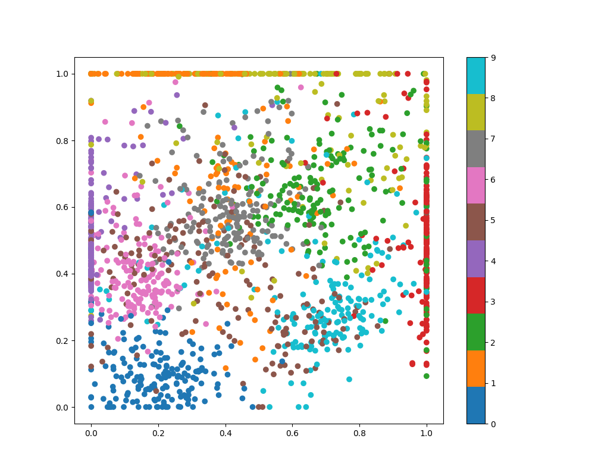

Note
Click here to download the full example code
Transform example¶
Rank similarity transform makes an unsupervised non-linear transform, here on the digits dataset. By plotting the first two dimensions, e.g. responses of the first two filters you can see which digits they are sensitive to.
import numpy as np
from matplotlib import pyplot as plt
from ranksim import RankSimilarityTransform
from sklearn.datasets import load_digits
X, y = load_digits(return_X_y=True)
embedding = RankSimilarityTransform(n_filters=10, n_iter=20,
random_state=0)
X_transformed = embedding.fit_transform(X)
plt.figure(figsize=(10,8))
plt.scatter(X_transformed[:,0], X_transformed[:,1], c=y, cmap='tab10')
plt.colorbar(boundaries=np.arange(11)-0.5).set_ticks(np.arange(10))
plt.show()
Total running time of the script: ( 0 minutes 0.379 seconds)